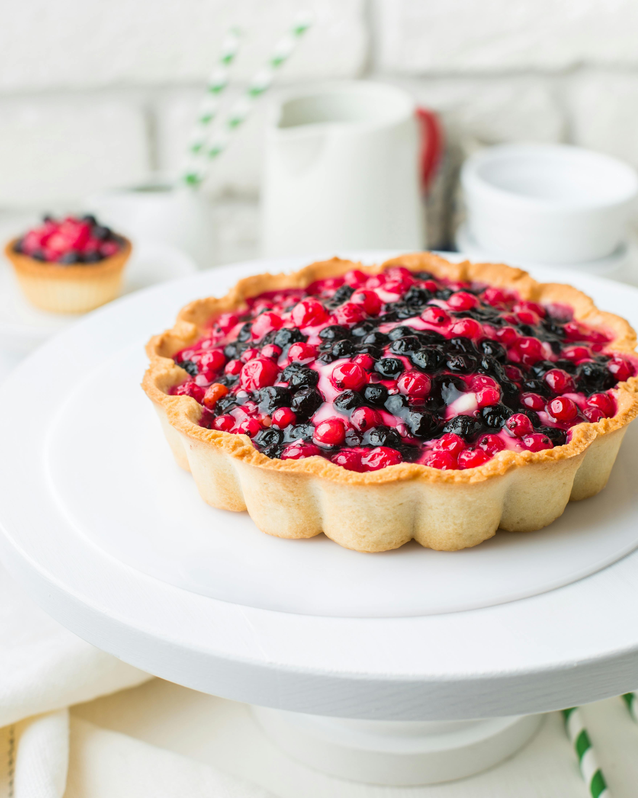

La Fabrique Des Saveurs
Notre délicieuse recette de la tarte aux fruits rouges

Cette tarte aux fruits rouges, fraîche et légère, allie la douceur de la crème pâtissière à l'acidité des
fruits, offrant un dessert coloré et gourmand, idéal pour un goûter estival ou un dessert de fête.
Ingrédients raffinés :
Pâte sablée :
250 g de farine
125 g de beurre mou
80 g de sucre glace
1 œuf
1 pincée de sel
Crème pâtissière:
500 ml de lait
4 jaunes d’œufs
100 g de sucre
1 gousse de vanille ou 1 cuillère à café d'extrait de vanille
Garniture
300 g de fraises
200 g de framboises
150 g de myrtilles
150 g de mûres
1 sachet de nappage ou de gelée de fruits rouges (facultatif)
Etapes :
Préparation de la pâte sablée :
Mélangez la farine, le sucre glace et le sel dans un bol
Ajoutez le beurre mou en morceaux et sablez la pâte du bout des doigts
Incorporez l'œuf et mélangez jusqu'à obtenir une pâte homogène. Formez une boule et laissez reposer au
réfrigérateur pendant 30 minutes.
Étalez la pâte et foncez un moule à tarte. Piquez le fond avec une fourchette et faites cuire à blanc à
180°C pendant 15-20 minutes, jusqu'à ce qu’elle soit dorée. Laissez refroidir.
Préparation de la crème pâtissière
Faites chauffer le lait avec la gousse de vanille fendue.
FFouettez les jaunes d’œufs avec le sucre jusqu’à blanchiment, puis ajoutez la maïzena.
Versez le lait chaud sur le mélange tout en fouettant, puis remettez sur le feu et faites cuire jusqu'à ce
que la crème épaississe.
Laissez refroidir en filmant au contact pour éviter la formation d'une croûte
Montage de la tarte
Étalez la crème pâtissière refroidie sur le fond de tarte.
Disposez harmonieusement les fruits rouges sur la crème (fraises, framboises, myrtilles, mûres).
Si vous le souhaitez, faites chauffer un peu de nappage ou de gelée de fruits rouges et badigeonnez les
fruits pour leur donner un aspect brillant.
Placez la tarte au réfrigérateur pendant au moins 1 heure avant de servir pour que les saveurs se mêlent
bien.